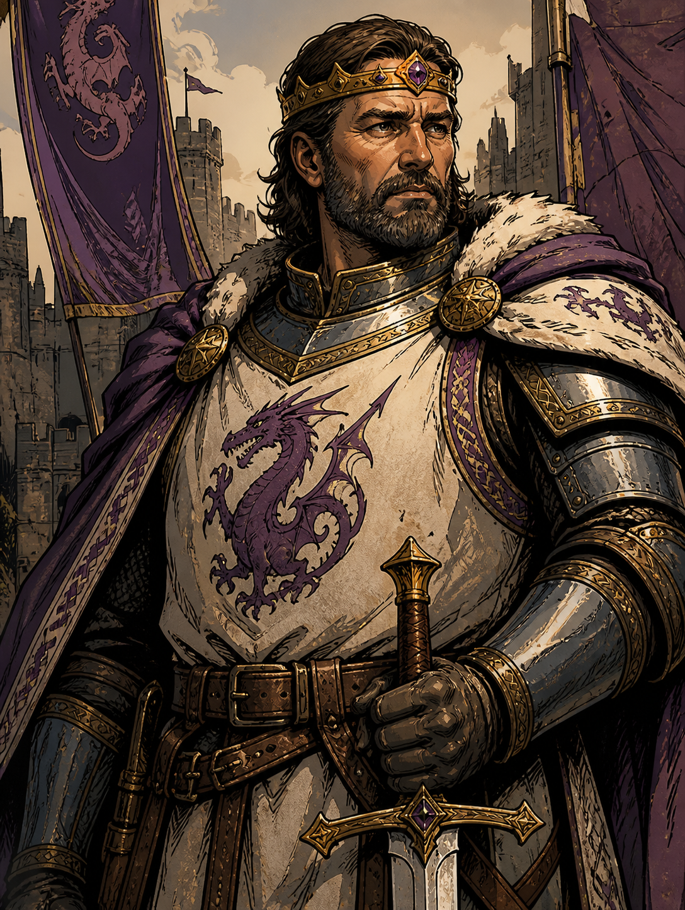

Azoun IV
Cargo Rey de Cormyr, 1336–1371 DR; fallecido Casa / afiliación Casa Obarskyr · Purple Dragons Raza y clase Humano; guerrero 15/caballero del Dragón Púrpura 5 (hoja de 1371 DR) Alineamiento legal bueno Edad en 1374 murió en 1371 DR, con unos 64 años Fuentes Cormyr (AD&D 2e) · Volo’s Guide to Cormyr · Cormyr: A Novel · Beyond the High Road · Death of the Dragon · Four from Cormyr · Swords of Eveningstar · Swords of Dragonfire · Azure Bonds · The Wyvern‘s Spur · Crusade · Crown of Fire · Hand of Fire · Murder in Cormyr · Stormlight · Elminster’s Daughter · The Ring of Winter · Once Around the Realms · The Siege · Cormyr: Land of the Purple Dragon · Forgotten Realms Wiki
Azoun IV murió en 1371 DR, después de matar a Nalavarauthatoryl en la Guerra de los Trasgos. Corpulento, de barba completa y cabello castaño encanecido, había llevado la corona con la familiaridad de quien también sabía llevar una espada de vaina gastada. Gobernó Cormyr desde 1336 DR y combatió al frente de sus ejércitos: recuperó Arabel, detuvo a los tuigan y murió defendiendo el reino. A fines de 1374, su nieto Azoun V ocupa el trono bajo la regencia de Alusair. La victoria del abuelo había preservado la dinastía, pero el reino quedó en manos de un niño y de la hija guerrera del rey muerto.12
Las canas y la espada usada
Azoun tenía ojos marrones, del color del roble, y medía algo menos de 1,83 m. Sus facciones podían parecer comunes; su porte, en cambio, era regio. En 1369 DR, salvo por las canas, aparentaba unos cuarenta años y conservaba musculatura, agilidad y destreza como jinete y espadachín. Sonreía y reía con facilidad. Cuando pensaba, se mesaba la barba o recorría la habitación de un lado a otro, gestos que también acompañaban sus partidas de ajedrez y sus deliberaciones militares.34
En las cacerías de 1369 vestía cuero blanco bordado de púrpura, botas resistentes y guantes a juego. Una corona sencilla contrastaba con el cinturón usado y la vaina muy gastada de la espada. Llevaba un cuerno de caza y conservaba un viejo pañuelo marrón, regalo de Filfaeril, al que atribuía buena suerte. Para la guerra disponía de armadura completa +5 y escudo +2, adornado con un dragón púrpura sobre fondo negro. Las heridas tampoco le eran ajenas: una flecha en la pierna izquierda siguió doliéndole al final de la campaña de 1360; en 1370 llevó el brazo en cabestrillo y el hombro vendado.567
De Balin a la corona, 1307–1357 DR
Nació en 1307 DR, hijo de Rhigaerd II y Tanalusta Truesilver. Algunos daban a su madre el nombre de Tanalasta; ambas formas acompañaron el recuerdo de la reina. Su hermana Sulesta era cinco años mayor. Hacia 1367, los tres habían muerto. Azoun era contado como el septuagésimo primer monarca de su línea, aunque otros hablaban de setenta y una generaciones de gobernantes anteriores a él: la antigüedad de la casa se expresaba con más acuerdo que su cómputo.389
Antes de reinar había sido Balin el Caballero, aventurero de los King's Men, compañía iniciada por Dimswart y Winefiddle. Vangerdahast vigiló aquellas expediciones y lo salvó en varias ocasiones. En 1324 DR viajaron de incógnito como Balin y Borl; Azoun se resistía a la tutela del mago y en aquella aventura conoció a Kamara, una mujer tigre. El futuro soberano aprendió a moverse bajo otro nombre mucho antes de utilizar ese recurso para conocer a sus súbditos.1011
El 2 de Eleint de 1329 DR se casó con Filfaeril y renunció públicamente a sus hábitos de mujeriego. La familia sufrió pronto una pérdida: Foril, su hijo de dos años, fue asesinado en 1334 DR, crimen atribuido a los Fire Knives. Ese mismo año nació Tanalasta, y en 1335 nació Alusair Nacacia. También se situaba en 1335 una aventura de Azoun con Scoril «Shadowhawk» Cimber y su hijo Artus: un intento de robo terminó en un enfrentamiento con asesinos zhentarim y en el rescate de Scoril.12
En 1336 DR accedió al trono. Vangerdahast asumió formalmente el cargo de Mago Real, la jefatura del Council of Mages y el mando de los War Wizards. Antes de 1357, Azoun retiró la autorización a los Fire Knives, ejecutó a sus dirigentes y expulsó al resto; desde Westgate continuaron amenazándolo. En 1348, Florin Falconhand lo defendió de un ataque. El rey atendió al joven herido y después firmó en Espar la autorización de los Swords of Eveningstar. Aquel año agradeció también a Florin y a Dove la protección de sus hijas. Durante una recepción supo disimular un incidente presentándolo como una persecución fingida: la seguridad de la familia y la apariencia de normalidad podían exigir respuestas distintas.131415
En 1352 DR, Gondegal intentó crear un reino con centro en Arabel. Azoun dirigió el contraataque de los Purple Dragons; el poder del usurpador duró ocho días y el ejército real entró en la ciudad sin derramamiento de sangre. El episodio le hizo reconocer cuánto se había alejado de sus habitantes. Después reanudó sus viajes de incógnito por pueblos y ciudades para comprobar personalmente lo que ocurría bajo su autoridad.1617
En 1357 DR, Alias atacó a Giogi Wyvernspur al oírlo imitar la voz del rey. Azoun y Vangerdahast investigaron lo sucedido y negociaron la retirada de la dragona Mist de las cercanías de Suzail; Giogi recibió el encargo de indagar sobre Alias en Westgate. Ese año el rey intervino, por medio del mago, en los problemas que rodeaban a Shandril Shessair, preocupado por los perseguidores que la joven atraía al reino. En Eveningstar llegó a enfrentarse a un cambiaformas que lo había suplantado y consoló a Tessaril Winter cuando ella sintió la muerte de Shandril.1819
La cruzada y sus compromisos, 1360–1367 DR
En 1360 DR promovió la guerra contra Yamun Khahan pese a las objeciones de gremios y consejeros. Para reunir aliados aceptó una concesión de un año respecto a Darkhold, precio de la ayuda de Zhentil Keep. Se atribuían a Cormyr doce mil soldados; otros extendían esa cifra a fuerzas de varios territorios. Tampoco hubo acuerdo sobre el balance de la coalición: se hablaba de treinta mil aliados iniciales y veinte mil supervivientes, mientras otro recuento reducía a quince mil el ejército antes de la segunda batalla.202122
La oposición alcanzó los jardines reales. Bors, un trampero contrario a la cruzada, lanzó desde un pergamino una bola de fuego durante un discurso del soberano. Las protecciones salvaron al matrimonio real, pero hubo muertos y heridos entre el público. Ya en campaña, Azoun volvió a encontrarse con Alusair entre los enanos de Earthfast y tuvo que mantener unida una coalición en la que enanos y orcos se detestaban. Las negociaciones con el khahan fracasaron; el rey resultó herido en la primera batalla y su hija asumió responsabilidades durante la convalecencia.2324
Antes del segundo combate, una sugerencia de Vrakk dio lugar al plan de agujeros ocultos con ilusiones. Azoun invocó a Tymora antes de combatir y mató personalmente a Yamun Khahan. Después ordenó proteger y liberar a los prisioneros tuigan, pese al consejo de algunos mandos. La victoria no eliminó los compromisos que había contraído: había tolerado rumores útiles para la moral de sus fuerzas y luego aceptó la responsabilidad por sus consecuencias. De regreso alentó una unión más estrecha de Cormyr, Sembia y los Valles, aspiración que excedía la campaña terminada.2526
Sus intereses también alcanzaban el comercio. Respaldó con fondos y un embajador el proyecto del canal de Innarlith, iniciado en 1364 DR entre el Lake of Steam y el Nagaflow, para abrir una vía marítima que evitara rutas terrestres amenazadas por los Zhentarim. En 1365, Storm Silverhand mostró un anillo que él le había entregado para actuar con autoridad regia ante señores, oficiales y ciudadanos. En 1367 prohibió durante un año las operaciones del Iron Throne por los delitos de sus agentes. El asesinato de Grodoveth, enviado suyo en el sudeste, provocó una investigación respaldada por la corona.2728
Veneno, sucesión y dragones, 1369–1371 DR
En una cacería de 1369 DR con sus primos Thomdor y Bhereu y con Aunadar Bleth, Azoun mató al Abraxus, un toro mecánico envenenador, pero quedó gravemente intoxicado. Romper la varilla que llevaba en la bota permitió llamar ayuda. Thomdor y Bhereu murieron en aquel asunto. El rey sobrevivió y reapareció para frustrar la toma del poder: Dauneth Marliir recibió la responsabilidad militar de Arabel, Giogi obtuvo tierras confiscadas a los Cormaeril y las casas Bleth y Cormaeril fueron exiliadas.2930
En 1370 DR celebró su sexagésimo tercer cumpleaños. Las disputas con Tanalasta por el Templo Real de Chauntea, su desobediencia y la sucesión mostraron los límites de la concordia familiar. Llegó a señalar a Alusair como alternativa para heredar el trono. Mientras tanto, la crisis de los ghazneths lo llevó herido al rescate de Filfaeril frente a Boldovar y a la caverna de la Sleeping Sword, donde encontró destruida la reserva militar. Entre 1370 y 1371, la invasión de Nalavarauthatoryl, sus orcos, los trasgos de Grodd y los ghazneths alcanzó Arabel, Eveningstar y otras poblaciones.313233
En la campaña de 1371 combatió junto a Alusair, obtuvo con astucia información de Luthax y sufrió el ataque de Suzara convertida en ghazneth. Para el duelo final llevó el Scepter of Lords de Iliphar. Intentó negociar una reparación de agravios antiguos, incluso ofreciendo su propia vida, antes de matar a la dragona. Nalavara le aplastó el hombro izquierdo y su sangre contaminó las heridas del rey, alterando la magia con la que intentaron curarlo. Azoun supo que había nacido su nieto, se despidió de Alusair y murió.34352
Después de su muerte en 1371, los cuerpos conservados del rey y de Tanalasta fueron expuestos públicamente. Alusair acompañó el cortejo; ambos fueron enterrados en la cripta real bajo el palacio, en ataúdes protegidos por magia. Azoun V, hijo de Tanalasta y Rowen Cormaeril, sucedió a su abuelo bajo la regencia de Alusair. En 1372, durante otra crisis, Vangerdahast aún llamó a combatir por Azoun; Alusair y Caladnei tuvieron que asistir al mago. El nombre del rey seguía pesando sobre quienes habían sobrevivido.3637
Una conciencia bajo la corona
Azoun fue ingenioso, sonriente y capaz de conservar el humor bajo presión. En el gobierno podía ser prudente y práctico; también tenía gustos costosos y un idealismo difícil de abandonar. Consideró un deber detener a los tuigan más allá de sus fronteras y antepuso su conciencia a la conveniencia militar al decidir la suerte de los prisioneros. A sus protectores les complicaba la tarea: no aceptaba permanecer apartado mientras otros combatían. Esa valentía lo acercaba a sus soldados y lo exponía a los mismos peligros.32638
Con sus hijas convivían ternura y autoridad. No quería sacrificar sin más la felicidad de Tanalasta a un matrimonio conveniente; cuando ella desafió sus decisiones, sin embargo, reaccionó con ira y presión dinástica. Su preocupación por el templo de Chauntea incluía el temor a romper el equilibrio entre cultos. La continuidad de los Obarskyr era para él un deber público que entraba en los asuntos más íntimos de la familia.3139
Acogía músicos, escultores y otros artistas, disfrutaba del teatro y los disfraces, leía, jugaba al ajedrez y tocaba la mandolina. Patrocinó la historia de la cruzada escrita por Thom Reaverson. También buscaba conocer a quienes quedaban fuera de los consejos de palacio: defendía que los plebeyos pudieran presentar sus preocupaciones a la nobleza o al rey y recibieran una respuesta cortés. Sus viajes le servían para ajustar las políticas a problemas observados personalmente.174041
Entre el despacho y el camino
En Suzail, antes de las emergencias de su último año, una jornada de Azoun alternaba despacho, consejo y audiencias con entrenamiento, tiempo familiar y alguna actividad artística. El ejercicio con espada y escudo era diario en 1360; el trabajo sobre decretos y libros podía prolongarse en el estudio o en su habitación de la torre. Consultaba con Vangerdahast y trataba con consejeros, nobles y visitantes, acompañado por guardias personales. En distintas ocasiones lo rodearon seis guerreros de nivel 8 o guardias de nivel 9.4243
Alrededor de su cumpleaños recibía los juramentos de compañías de aventureros, concedía autorizaciones y participaba en banquetes y actuaciones. Los grupos armados debían registrarse y reconocer su lealtad. Fuera de las celebraciones, podía dejar la corte y viajar de noche por Tilverton, High Horn o Marsember, atendiendo cuestiones civiles y militares. En 1371, las reuniones con oficiales, el mando sobre el terreno y el combate ocuparon el lugar del despacho.174445
Eveningstar ofrecía otro ritmo: paseos, bebida en The Lonesome Tankard y baile en The Low Lantern, a veces con Vangerdahast. Algunos vecinos lo reconocían y lo trataban como amigo. Para escuchar una valoración del ánimo de la población llevaba una buena comida al sátiro Baerelus, que compartía sus impresiones sin traicionar confidencias individuales. El rey buscaba conversación incluso donde no podía exigir nombres.4647
Lealtades, enemigos y recursos
Filfaeril, cuatro años menor, fue esposa, reina y colaboradora política. Tanalasta lo asistió como consejera; Alusair ganó su reconocimiento como guerrera y compartió con él afecto y discusiones. Vangerdahast había sido maestro de historia, ética y usos políticos y militares de la magia, y terminó siendo protector, consejero y amigo. La confianza entre ambos resistió desacuerdos, aunque el mago podía decidir por su cuenta y el soberano se reservaba su propia conciencia.32648
Dimswart y Winefiddle conservaron el vínculo de las aventuras juveniles. Thomdor y Bhereu, hermanos entre sí y primos terceros del rey, habían sido compañeros de armas hasta 1369. Giogi y Cat Wyvernspur lo ayudaron durante el asunto Abraxus; con Giogi compartía además el ajedrez. Dauneth fue servidor leal y posible consorte favorecido para Tanalasta. La prima real Beatrice y su esposo Grodoveth pertenecían a una red familiar que también podía conocer el desfavor de Suzail: él fue enviado al sudeste después de perderlo.10283049
Frente a esas lealtades estaban los Zhentarim, los Fire Knives y los conspiradores Bleth-Cormaeril. La cooperación excepcional con Zhentil Keep no borró la rivalidad. Tampoco el exilio de una casa hacía traidores a todos sus miembros: el padre del heredero era Rowen Cormaeril. Gondegal y Yamun Khahan pertenecían a guerras anteriores; Nalavara y los ghazneths fueron los enemigos de su última campaña.162025303336
Desde el palacio de Suzail, Azoun dirigía los Purple Dragons y recibía el asesoramiento de los War Wizards. Podía obtener equipo, bestias de combate, máquinas de asedio y encargos mágicos. Custodiaba la regalia Ansrivarr, Symylazarr, Orblyn y Rissar, y poseía una colección de espadas mágicas que incluía una vorpal y una defensora +4. Una daga de plata +4 podía quedar oculta en su bota; los brazales defensivos y los anillos completaban protecciones que no dependían de llevar siempre la armadura. Su figura llegaba más lejos que sus audiencias: se vendían muñecas encajables y marionetas con su imagen, y un ajedrez dedicado a la Horda y la cruzada representaba también a Alusair y Vangerdahast.50
Lo que quiso preservar
Azoun buscó un Cormyr tan seguro y pacífico como pudiera hacerlo. En 1360 ese propósito lo llevó a una guerra distante y después al deseo de unir más estrechamente las tierras occidentales. En 1369 y 1370 se concentró en preservar la dinastía y preparar una sucesión capaz, aun a costa de conflictos con sus hijas. En 1371 quiso salvar al reino y a su familia; la oferta de su vida a Nalavara fue el último intento de conseguirlo mediante un acuerdo.17263135
Rumores
Durante su reinado se decía que la sangre Obarskyr conservaba joven a Azoun. También corrían historias de sus visitas de incógnito a The Black Rat. Sus aventuras amorosas dieron pie al apodo Loosecords, que otros pronunciaban Loosecods, y a relatos de numerosos hijos no reconocidos.515253
Se señalaba a Vandara Thulont como posible hija suya. La semejanza de algunos jóvenes Cormaeril y Thundersword con el soberano, acompañada de discretas ofertas de patrocinio militar, alimentaba otras sospechas. Sobre Tessaril Winter persistían dos versiones: unos sostenían que habían sido amantes antes de la boda y después solo amigos; otros aseguraban que la intimidad había continuado durante el matrimonio.54554656
En una celebración anterior a 1369 circuló que Azoun y Filfaeril buscaban otro hijo y que prepararían un matrimonio para dominar el carácter de Alusair. En otros momentos se atribuyó a Passepout una misión regia contra la Brotherhood of the Red Tide. Hasta la sucesión se contaba de manera dispar: algunos colocaban a Tanalasta después de su padre, aunque la princesa murió antes que él y fue su hijo quien heredó.575836
Estadísticas (D&D 3.5)
Hoja de juego · 1371 DR
| Tamaño/Tipo | Humanoide Mediano (humano) |
|---|---|
| Alineamiento | Legal bueno |
| Edad | 64 años al morir, en 1371 (nació en 1307) |
| Características | Fue 25, Des 10, Con 16, Int 14, Sab 14, Car 18 |
| Dados de Golpe | (15d10)+(5d10)+80 (252 PG) |
| Iniciativa | +4 |
| Velocidad | 6 m |
| Clase de Armadura | 31, toque 13, desprevenido 31 |
| Ataque base/Presa | +20/+27 |
| Ataque | Longsword +4 (Defending) +33 c/c (1d8+15/17-20) |
| Ataque completo | Longsword +4 (Defending) +33/+28/+23/+18 c/c (1d8+15/17-20); o Longsword +2 (Vorpal) +31/+26/+21/+16 c/c (1d8+13/17-20); o Dagger +4 (Alchemical Silver) +31/+26/+21/+16 c/c (1d4+10/19-20) |
| Espacio/Alcance | 1,5 m/1,5 m |
| Salvaciones | Fort +20, Ref +10, Vol +14 |
| Dotes | CleaveYou can follow through with powerful blows. If you deal a creature enough damage to make it drop (typically by dropping it to below 0 hit points or killing it), you get an immediate, extra melee attack against another creature within reach. You cannot take a 5-foot step before making this extra attack. The extra…Player's Handbook, p.92, DiehardYou can remain conscious after attacks that would fell others. When reduced to between -1 and -9 hit points, you automatically become stable. You don't have to roll d% to see if you lose 1 hit point each round. When reduced to negative hit points, you may choose to act as if you were disabled, rather than dying.…Player's Handbook, p.93, EnduranceYou are capable of amazing feats of stamina. You gain a +4 bonus on checks relating to stamina or extended physical activity. Also, you may sleep in light or medium armor without becoming fatigued.Player's Handbook, p.93, Great CleaveYou can wield a melee weapon with such power that you can strike multiple times when you fell your foes. This feat works like Cleave, except that there is no limit to the number of times you can use it per round.Player's Handbook, p.94, Greater Weapon Focus (Longsword)Choose one type of weapon, such as greataxe, for which you have already selected Weapon Focus. You can also choose unarmed strike or grapple as your weapon for purposes of this feat. You are especially good at using this weapon. You gain a +1 bonus on all attack rolls you make using the selected weapon. This bonus…Player's Handbook, p.95, Greater Weapon Specialization (Longsword)Choose one type of weapon, such as greataxe, for which you have already selected Weapon Specialization. You can also choose unarmed strike or grapple as your weapon for purposes of this feat. You deal extra damage when using this weapon. You gain a +2 bonus on all damage rolls you make using the selected weapon.…Player's Handbook, p.95, Improved Critical (Longsword)Choose one type of weapon, such as longsword or greataxe. With that weapon, you know how to hit where it hurts.Player's Guide to Faerûn, p.95, Improved InitiativeYou can react more quickly than normal in a fight.Unearthed Arcana, p.96, Improved ToughnessA creature with this feat is significantly tougher than normal.Monster Manual III, p.207, Iron WillYou have a stronger will than normal. You get a +2 bonus on all Will saving throws.Player's Handbook, p.96, LeadershipYou are the sort of person others want to follow, and you have done some work attempting to recruit cohorts and followers.Player's Guide to Faerûn, p.97, Mounted CombatYou are skilled in mounted combat. Once per round when your mount is hit in combat, you may attempt a Ride check (as a reaction) to negate the hit. The hit is negated if your Ride check result is greater than the opponent's attack roll.Player's Handbook, p.98, NegotiatorYou are good at gauging and swaying attitudes.Player's Guide to Faerûn, p.98, Power AttackYou can make exceptionally powerful melee attacks. On your action, before making attack rolls for a round, you may choose to subtract up to 20 from all melee attack rolls and add the same number to all melee damage rolls.Player's Handbook, p.98, Ride-By AttackYou are skilled at making fast attacks for your mount. When you are mounted and use the charge action, you may move and attack as if with a standard charge and then move again.Player's Handbook, p.99, Skill Focus (Diplomacy)Choose a skill, such as Move Silently. You have a special knack with that skill.Unearthed Arcana, p.100, Spirited ChargeYou are trained at making a devastating mounted charge. When mounted and using the charge action, you deal double damage with a melee weapon (or triple damage with a lance).Player's Handbook, p.100, Weapon Focus (Longsword)You are especially good at using this specified weapon.Player's Guide to Faerûn, p.102, Weapon Specialization (Longsword)Choose one type of weapon, such as greataxe, for which you have already selected the Weapon Focus feat. You can also choose unarmed strike or grapple as your weapon for purposes of this feat. You deal extra damage when using this weapon. You gain a +2 bonus on all damage rolls you make using the selected weapon.Player's Handbook, p.102, Weapon Supremacy (Longsword)You are a grandmaster in the use of your chosen weapon. When you hold it in your hands, no foe can stand against you.Player's Handbook II, p.85 |
| Habilidades | Averiguar intencionesDetectar mentiras e intenciones ocultas.4 rangos · Sab +8, AvistarAdvertir lo que está a la vista.3 rangos · Sab +5, DiplomaciaNegociar, persuadir y cambiar la actitud de los demás.7 rangos · Car +16, EscucharOír ruidos y conversaciones.3 rangos · Sab +5, Interpretar (instrumentos de cuerda)Actuar ante un público: música, canto, oratoria.2 rangos · Car +6, IntimidarAmedrentar y desmoralizar.13 rangos · Car +17, MontarMontar y combatir a caballo.22 rangos · Des +24, Saber (local)Saber erudito de un campo concreto.4 rangos · Int +6, Saber (nobleza y realeza)Saber erudito de un campo concreto.4 rangos · Int +6, SaltarSaltar distancias y alturas.3 rangos · Fue -2, Trato con animalesAdiestrar y dirigir animales.12 rangos · Car +16, TreparTrepar muros, cuerdas y pendientes.4 rangos · Fue +5 |
| Cualidades especiales | Fear (Sp)Once per day, a 3rdlevel or higher Purple Dragon knight may evoke a fear effect that functions like the spell of the same name (caster level equals Purple Dragon knight's character level).Player's Guide to Faerûn, p.69, Final Stand (Su)Once per day, a Purple Dragon knight of at least 5th level can inspire his troops to a heroic effort. When he uses this ability, the knight gains 2d10 temporary hit points, and so does each ally within 10 feet of him. This ability can affect a maximum number of creatures equal to the character's Purple Dragon…Player's Guide to Faerûn, p.69, Heroic Shield (Ex)Beginning at 1st level, when the Purple Dragon knight uses the aid another action (see page 154 of the Player's Handbook) to improve an ally's AC, his effort grants a +4 circumstance bonus instead of the normal +2.Player's Guide to Faerûn, p.69, Inspire Courage (Su)Once per day at 2nd level, the Purple Dragon knight can make an inspirational speech to bolster his allies and himself against fear and improve the group's combat abilities. This ability functions like the inspire courage function of the bardic music ability. Each affected creature, including the knight himself,…Player's Guide to Faerûn, p.69, Oath of Wrath (Su)At 4th level, the Purple Dragon knight may select a single opponent within 60 feet and swear to defeat him. For the duration of the encounter, the knight gains a +2 morale bonus on melee attack rolls, weapon damage rolls, saving throws, and skill checks made against the challenged target. The effect is negated…Player's Guide to Faerûn, p.69, Rallying Cry (Su)Three times per day, a Purple Dragon knight can utter a powerful shout (usually "For Cormyr!") that grants him a +1 morale bonus on his next attack roll and increases his land speed by 5 feet until his next turn. These same benefits also extend to each of his allies within 60 feet. Traditionally, the rallying cry…Player's Guide to Faerûn, p.69 |
| Idiomas | Chondathan, Common, Dwarven |
Longsword +4 (Defending)can transfer some or all of sword's enhancement bonus to ACPersonalizado - Wizards of the Coast - Player's Handbook, p.119, Longsword +2 (Vorpal)severs opponent's head on natural 20 critical hitPersonalizado - Wizards of the Coast - Player's Handbook, p.119, Full Plate +5This armor is made of shaped and fitted metal plates, must be made to measure or adjusted for cost.Personalizado - Wizards of the Coast - Player's Handbook, p.124, Heavy Steel Shield +3Personalizado - Wizards of the Coast - Player's Handbook, p.125, Dagger +4 (Alchemical Silver)10hp/inch and 8 hardnessPersonalizado - Wizards of the Coast - Player's Handbook, p.116, Ring of Protection +3This ring offers continual magical protection in the form of a deflection bonus of +3 to AC. Faint abjuration; CL 5thDungeon Master's Guide, p.232, Ring of Freedom of MovementThis gold ring allows the wearer to act as if continually under the effect of a freedom of movement spell. Moderate abjuration; CL 7thDungeon Master's Guide, p.232, Amulet of Health +4This amulet is a golden disk on a chain. It usually bears the image of a lion or other powerful animal. The amulet grants the wearer an enhancement bonus to Constitution of +2, +4, or +6. Moderate transmutation; CL 8thDungeon Master's Guide, p.246, Belt of Giant Strength +6This wide belt is made of thick leather and studded with iron. The belt adds to the wearer's Strength score in the form of an enhancement bonus of +4 or +6. Moderate transmutation; CL 10thDungeon Master's Guide, p.248, Cloak of Resistance +4These garments offer magic protection in the form of a +4 resistance bonus on all saving throws (Fortitude, Reflex, and Will). Faint abjuration; CL 5thDungeon Master's Guide, p.253, Noble's OutfitThis set of clothes is designed specifically to be expensive and to show it. Precious metals and gems are worked into the clothing. to fit into the noble crowd, every would-be noble also needs a signet ring (see Adventuring Gear, above) and jewelry (worth at least 100 gp).Player's Handbook, p.131, Commander's Ringsense direction and distance of any Purple Dragon Rings within 100-ft radius.Magic of Faerûn, Azoun's Ring of TeleportationAnillo con el que el rey se teletransporta a donde desea; de noche lo usa para recorrer el reino de incógnito y, en una emergencia, para volver a Suzail. Teleportar 3/día. Moderada conjuración; NL 9Adaptación a 3.5 · Cormyr (AD&D 2e) p.43-44, Royal BootstickVarilla corta, oculta en la bota, con varias gemas de paso engarzadas: abre las protecciones de la Corona (aposentos reales, arsenales, cámaras) sin cambiar de piedra. Poderes de una piedra de paso (no se acumulan). La usan el rey, el Mago Real y los altos mandos. Moderada abjuración; NL 9Adaptación de 2e a 3.5 · VGC p.237, Azoun's Emergency Boot RodVarilla oculta en la bota del rey. Al quebrarla abre un portal por el que acuden guardias, clérigos y magos de la corte. Un solo uso; objeto único sin precio de mercado.Adaptación a 3.5 · Cormyr: A Novel p.28, Royal Signet of the ObarskyrsSello de la familia real. Quien lo lleva toca el anillo, imagina el rostro del Mago Real y le habla mente a mente (recado con el Mago Real como único destinatario, 3/día). Sirve también de sello y prueba de autoridad real. Lo usan los Obarskyr; un portador prudente se lo quita cuando lo persiguen criaturas que se…Adaptación a 3.5 · Cormyr: Beyond the High Road
Anillos: lleva puestos los de protección y libertad de movimiento; según la ocasión cambia por el de comandante, el sello real o el de teletransporte (solo dos anillos activos a la vez).
La colección de espadas: lleva la defensora como arma de corte y la vorpal a la guerra; ambas pertenecen al arsenal de la Corona.
Hoja calculada con PCGen (D&D 3.5) · 1371 DR · descargar .pcg
Secretos (DM)
Azoun prefería que los nobles atribuyeran su información a sus viajes antes que a la red de espías. Alusair le despejaba la agenda, Vangerdahast alteraba su apariencia y Filfaeril y las princesas sostenían las coartadas. En 1373 todavía se atribuía a Vangerdahast un control muy amplio de la corte y el gobierno durante aquel reinado; esa influencia coexistió con decisiones que el rey tomó por conciencia propia.176826
La riqueza de Crystal Grot, una caverna de zafiros de ubicación reservada, permitía moderar impuestos y reducir la dependencia de prestamistas nobles y mercantes. Solo los monarcas legítimos y muy pocas personas la visitaban; los mineros eran trasladados por magia. Se hablaba de un watchghost o un lich como custodio, sin certeza sobre ninguno.69
La esfera metálica del rey podía transformarse en llave de una cámara secreta, privilegio compartido con reina, princesas y Vangerdahast. Azoun tenía passagestones y usaba bootsticks para acceder a protecciones mágicas. Contaba además con un anillo de teletransporte; la varilla rompible de su bota abrió en 1369 el portal por el que acudieron guardias, clérigos y magos.67
En 1369, Vangerdahast explicó que conservaba muestras de carne de la familia para reconstruir a sus miembros mediante magia, pero las muestras habían desaparecido cuando fueron a buscarlas. La curación de Azoun tras el Abraxus requirió separar mágicamente la sangre y realizar transfusiones para eludir las defensas antimágicas del veneno; el mago atribuyó la solución a Dimswart y Alaphondar.7071
En 1357, la intimidad de Azoun y Tessaril había continuado durante su matrimonio. Filfaeril lo sabía; ella y Tessaril se querían y mantenían comunicación. Los rumores de que el matrimonio real intentaba engendrar otro hijo o casar a Alusair para someterla eran falsos. También era falsa la misión atribuida a Passepout contra la Brotherhood of the Red Tide.565758
En 1369, Brantarra afirmó haber dominado la voluntad del rey en Arabel y haber tenido de él un hijo destinado al trono. La afirmación procedía de una conspiradora; la filiación seguía dependiendo de su palabra.72
Filfaeril pidió que Azoun no conociera la muerte de Tanalasta durante su agonía. Vangerdahast calló esa pérdida y le comunicó el nacimiento del nieto. Cuando el rey arrojó su espada durante la despedida, apareció un dragón que se desvaneció con ella; Alusair vio los gestos del mago que acompañaron el prodigio. Después del fallecimiento, Vangerdahast puso su propio anillo de deseos en el dedo de Azoun y lo ocultó con magia, antes de retirar la corona.273
Después de 1374
En 1384 DR, Azoun V será coronado y concluirá la Regencia de Acero.74
Footnotes
-
Cormyr (AD&D 2e), pp. 33–34, 43–45 · Cormyr: Land of the Purple Dragon, p. 15. ↩
-
Crusade, pp. 38, 243, 285–287 · Cormyr: A Novel, pp. 21, 377, 400–401 · Forgotten Realms Wiki → Cormyr: A Novel, edición inglesa de 1998 p.12. ↩
-
Cormyr: A Novel, pp. 16, 21. ↩
-
Forgotten Realms Wiki → Heroes’ Lorebook p.21, equipo y bonificadores · Cormyr (AD&D 2e), p. 43, colección de espadas mágicas. ↩
-
Crusade, pp. 230, 241, 250, 255 · Beyond the High Road, pp. 185, 188. ↩
-
Forgotten Realms Wiki → Heroes’ Lorebook p.21, variante materna Tanalasta en el cuadro familiar · Cormyr (AD&D 2e), p. 43, forma Tanalusta. ↩
-
Cormyr (AD&D 2e), pp. 33, 43; las dos formulaciones del cómputo dinástico no son literalmente equivalentes. ↩
-
Crusade, pp. 9–11 · Forgotten Realms Wiki → Heroes’ Lorebook p.21. ↩ ↩2
-
Cormyr: A Novel, pp. 360–369. ↩
-
Cormyr (AD&D 2e), p. 43, parentescos, muerte de Foril con dos años y nacimientos de las hijas · Forgotten Realms Wiki → Dragon Annual 2000 p.68, boda; Dragon #365 p.17, asesinato de Foril; Heroes’ Lorebook p.22, aventura con los Cimber. El año del asesinato y el episodio de 1335 remiten también a Realms of Valor, «The Family Business», sin página en el volcado y pendientes de cotejo directo. ↩
-
Cormyr (AD&D 2e), p. 45 · Cormyr: Land of the Purple Dragon, p. 15 · Azure Bonds, pp. 84, 151 · The Wyvern’s Spur, p. 46. La fecha alternativa de expulsión, 1341 DR, depende de Forgotten Realms Wiki → The Wyvern’s Spur, sin página y pendiente de cotejo. ↩
-
Swords of Eveningstar, pp. 50–51, 57–60. ↩
-
Swords of Dragonfire, pp. 31–32, 149–151. ↩
-
Cormyr (AD&D 2e), pp. 22, 33–34 · Cormyr: A Novel, pp. 377–387 · Cormyr: Land of the Purple Dragon, p. 15. ↩ ↩2
-
Azure Bonds, pp. 73–74, 100–105, 169, 265. ↩
-
Crown of Fire, pp. 31–34 · Hand of Fire, pp. 29–32, 264–265. ↩
-
Cormyr (AD&D 2e), p. 44 · Crusade, pp. 15–38, 70–73, 90. ↩ ↩2
-
Forgotten Realms Wiki → Heroes’ Lorebook p.22; Cormyr: A Novel, edición inglesa de 1998 p.19, recuentos de la coalición · Crusade, p. 90, doce mil cormyreanos; p.247, quince mil antes de la segunda batalla. ↩
-
Crusade, p. 247. ↩
-
Crusade, pp. 53–57, 77. ↩
-
Crusade, pp. 122–147, 187–197, 230, 237. ↩
-
Forgotten Realms Wiki → Lies of Light cap.37, sin página en el volcado, intervención en el canal pendiente de cotejo directo y de folio impreso · Stormlight, pp. 87–88, anillo de autoridad de Storm Silverhand en 1365. ↩
-
Murder in Cormyr, pp. 20, 22, 31, 75, 110, 130 · Forgotten Realms Wiki → Running the Realms, edición revisada de 2e p.23. ↩ ↩2
-
Cormyr: A Novel, pp. 23–28, 79, 135, 404. ↩
-
Cormyr: A Novel, pp. 398–404 · Cormyr: Land of the Purple Dragon, p. 15. ↩ ↩2 ↩3
-
Beyond the High Road, pp. 185–194, 228–239, 321–323. ↩
-
Cormyr: Land of the Purple Dragon, p. 15 · Death of the Dragon, pp. 87–90, 115–119. ↩ ↩2
-
Death of the Dragon, pp. 54–59, 87–90, 139–145. ↩
-
Death of the Dragon, pp. 103–104, 137–139, 337–344, 350, 356–363. ↩ ↩2
-
Death of the Dragon, pp. 359, 364, 367–369 · Cormyr: Land of the Purple Dragon, p. 15, sucesión de Azoun V · Forgotten Realms Wiki → Dragon Annual 2000 p.59, exequias. El cuadro de sucesión de Forgotten Realms Wiki menciona a Tanalasta con referencias compartidas a Heroes’ Lorebook p.21 y Dragon Annual 2000 p.68; la canónica no atribuye toda la información del cuadro a cada referencia individual. ↩ ↩2 ↩3
-
The Siege, p. 258 (The Siege). ↩
-
Cormyr: A Novel, p. 25 · Death of the Dragon, pp. 87–90 · Forgotten Realms Wiki → Cormyr: A Novel, edición inglesa de 1998 p.23. ↩
-
Cormyr: A Novel, pp. 18–19, 405–406 · Beyond the High Road, pp. 42, 54–58. ↩
-
Crusade, pp. 19–20, 89–91, 176, 285 · Cormyr: A Novel, pp. 400–401 · Forgotten Realms Wiki → Heroes’ Lorebook pp.21–22. ↩
-
Cormyr (AD&D 2e), p. 42. ↩
-
Cormyr (AD&D 2e), pp. 43–44 · Crusade, pp. 18–21, 176; organización de la jornada de 1371 inferida en la canónica a partir de los hábitos citados, sin horario fijo. ↩
-
Cormyr (AD&D 2e), pp. 43–45 · Four from Cormyr, p. 25; escoltas en momentos distintos, con niveles originales de 2e, sin convertirlos en bloques 3.5 ni fijarlos para 1371. ↩
-
Cormyr (AD&D 2e), p. 3 · Four from Cormyr, pp. 24–25, 40–43. ↩
-
Death of the Dragon, pp. 87–90, 115–119, 137–140. ↩
-
Volo’s Guide to Cormyr, p. 219. ↩
-
Cormyr (AD&D 2e), pp. 43–45 · Crusade, pp. 46–48 · Beyond the High Road, pp. 41–48 · Death of the Dragon, pp. 349, 355–357, 365–369. ↩
-
Cormyr (AD&D 2e), pp. 44–45 · Four from Cormyr, p. 24 · Cormyr: A Novel, pp. 79, 135, 399–404 · Beyond the High Road, pp. 21–25, 130–136 · Murder in Cormyr, pp. 22, 31, 75. ↩
-
Cormyr (AD&D 2e), pp. 43–45, 56 · Volo’s Guide to Cormyr, pp. 12, 23 · Crusade, p. 128 · Forgotten Realms Wiki → Heroes’ Lorebook p.21, equipo; Aurora’s Whole Realms Catalogue pp.111–112, muñecas, marionetas y ajedrez. ↩
-
Cormyr: A Novel, p. 18; conjetura de Thomdor. ↩
-
The Ring of Winter, pp. 9–10 · Crusade, pp. 84–89. The Ring of Winter queda con datación incierta: la tabla metodológica lo sitúa en 1357 DR, pero The Ring of Winter, pp. 18, 48 trata como pasada la cruzada de 1360 DR. ↩
-
Swords of Eveningstar, p. 91, forma Loosecods · Forgotten Realms Wiki → Swords of Eveningstar, edición inglesa de 2006 p.164, forma Loosecords; Cormyr: A Novel, edición inglesa de 1998 p.119. ↩
-
Volo’s Guide to Cormyr, p. 138. ↩
-
Volo’s Guide to Cormyr, p. 155. ↩